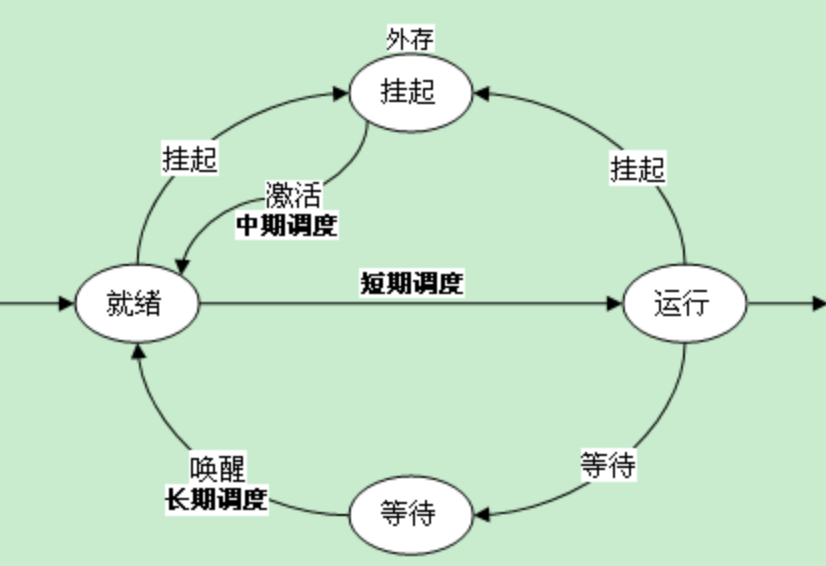
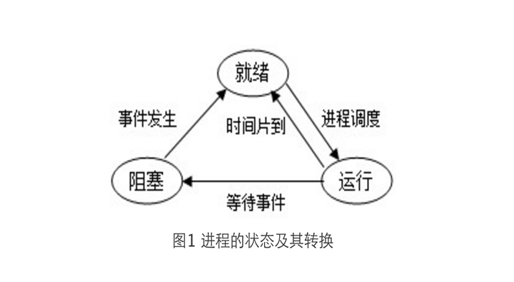
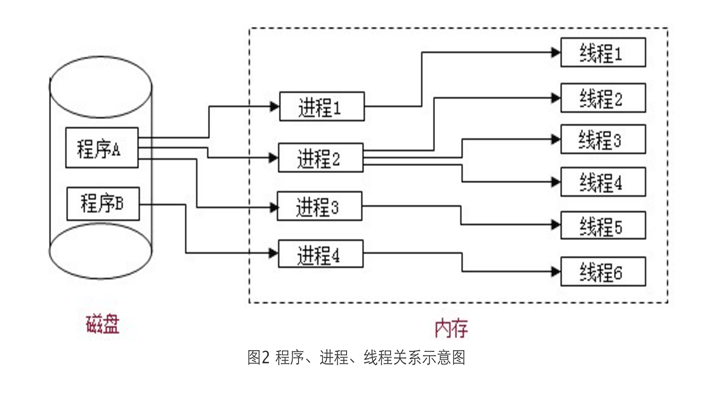
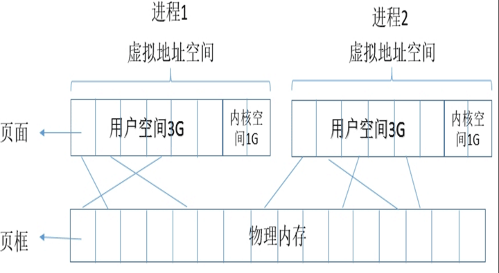
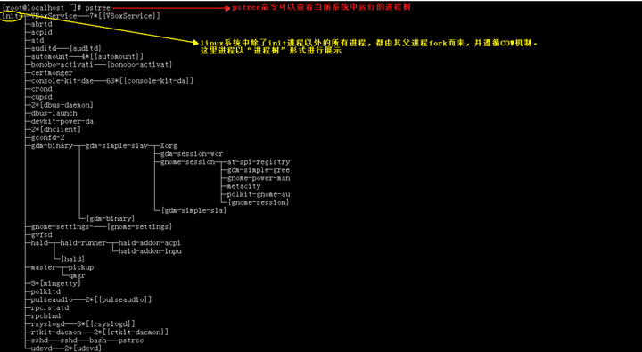
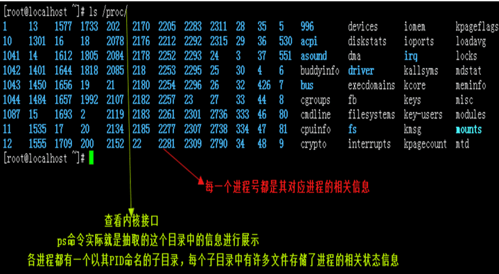
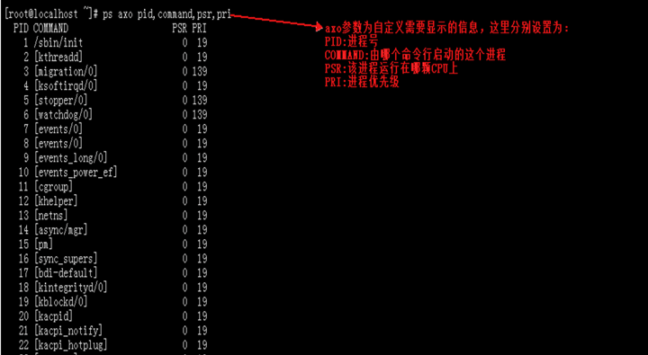
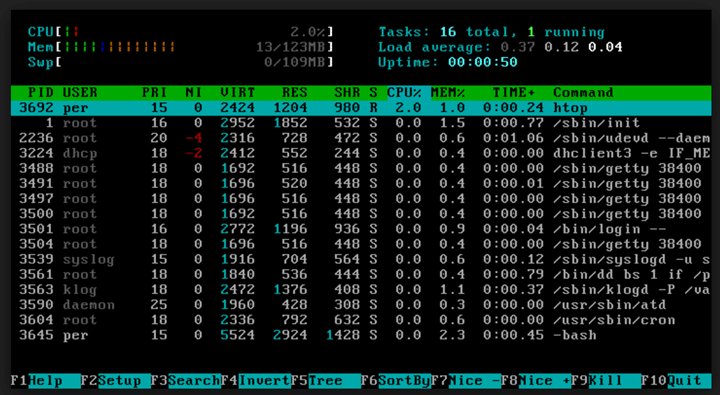
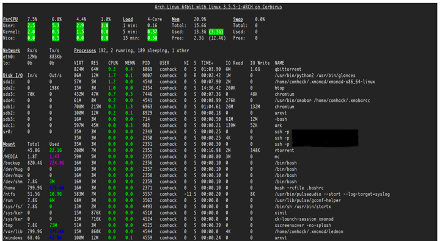
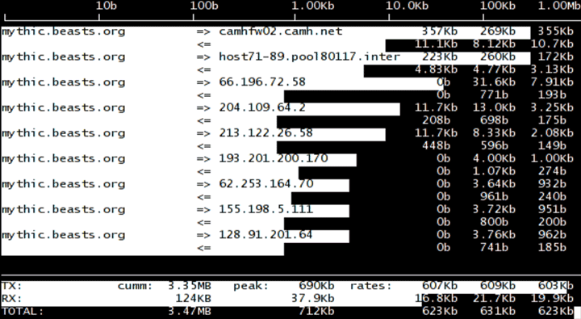

纸上得来终觉浅，绝知此事要躬行。

1.程序、进程与线程
程序是计算机为完成特定任务所执行的指令序列，对程序的管理也是操作系统的主要工作之一。
- 操作系统的重要任务之一就是使用户充分而有效地利用系统资源，并发性是操作系统最主要的特征。处理机的管理也称为进程的管理。
- 操作系统允许多道程序并发执行共享系统资源，而程序在并发执行时所产生的一系列特点使得传统的程序概念已经不足以对其进行描述，因此，引入了进程（
Process） - 进程可以更好的描述计算机程序的执行过程，反映操作系统的并发执行、资源共享及用户随机访问的特性，并以此作为资源分配的基本单位
- 操作系统的基本任务就是对进程实施管理，有效的控制进程的执行，给进程分配所需要的资源，允许进程之间共享和交换信息，并保护每个进程在运行期间不受其他进程的干扰，允许进程进行同步执行
1.1 进程的概念
每当用户运行一个程序时，操作系统就为该程序创建了一个进程，并为它分配资源、调度其运行。程序执行结束后，进程也就消亡了。一个程序被同时执行多次，系统就会创建多个进程。因此，一个程序可以被多个进程执行，一个进程也可以同时执行多个程序。
- 进程是程序的一次执行过程
- 进程是可以和其他计算并发执行的计算
- 进程是内存区域中的一组指令序列与其数据在处理机上顺序执行的一次活动
- 进程是一个可并发执行的程序在一个数据集上的一次运行，是操作系统资源分配的基本单位
1.2 进程的状态
进程在执行过程中，由于操作系统中出现的不同事件导致进程执行的间歇性、不确定性，使进程的状态也随执行过程发生变化，进程在其生命周期中可划分为三种基本状态。
三种基本状态
就绪状态- 进程已经获得了除 CPU 以外的一切资源，已经具备运行的条件。一旦得到 CPU 的使用权，便可立即投入运行。处于就绪状态的进程可以有多个，通常把它们放在一个队列中。运行状态- 进程已经获得 CPU 的使用权，其程序正在运行。在单 CPU 系统中，只有一个进程处于运行状态，而在多 CPU 系统中，则可能有多个进程处于运行状态。阻塞状态- 正在运行中的进程由于等待某个事件，如申请打印机输出，而打印机正在被其他进程占用，而暂停运行被挂起，其状态由运行状态变为阻塞状态。处于阻塞状态的进程也可以有多个，需要将它们组织为一个队列。
在运行期间，进程的状态是变化的，不断地从一个状态转换为另一个状态。处于运行状态的进程，因时间片用完被强行转换为就绪状态，也可能因为需要使用某个资源，而该资源被其他进程占用，而被转换为阻塞状态；处于阻塞状态的进程，因发生了某个事件，如需要的资源满足了，就立刻从阻塞状态转变为就绪状态；处于就绪状态的进程在得到了 CPU 的使用权后，被转换为运行状态。

1.3 线程作用
随着计算机硬件和软件技术的发展，许多操作系统设计的目标是追求更高地系统效能和更好地资源共享，为了达到此目标，人们又提出了比进程更小的能够独立运行的基本单位线程（
Thread），以此作为 CPU 分配的基本单位。
- 线程是对进程再进行细分，是一个进程内的基本调度单位。
- 引入线程的目的是为了提高操作系统并发执行的程度，从而进一步提高系统的吞吐量，减少程序并发执行时所付出的时间和空间开销。
- 一个进程至少拥有一个线程，进程还可以根据需要创建多个线程。进程中的所有线程共享该进程的资源，驻留同一块内存空间，可以访问相同的数据。
- 当一个线程改变了内存中某个单元的数据时，其他线程在访问该数据单元时会共享变化后的数据。因此线程之间的通信变得更为简单、容易了。
- 在
UNIX系统中，进程作为 CPU 的分配单位，在Windows系统中，则采用线程作为 CPU 的分配单位，进程成为（除 CPU 以外）资源的分配单位。 - 使用线程作为 CPU 分配的基本单位，可以充分共享资源，减少内存开销，提高并发性，加快切换速度，便于系统管理。

1.4 进程与程序的区别
由于计算机中的资源是有限的，不能满足所有进程的需要，因此就导致了进程间的资源竞争。使进程在运行期间相互制约，间歇性地异步运行。操作系统的处理机管理部分就是负责进程的管理以及各个进程之间的协调运行。
主要区别
- 进程的实质就是程序的执行过程，是一个动态的过程，而程序则是描述问题解题步骤和方法的指令集合，是静态的。
- 进程的生命期是暂时的，在执行初期被创建，执行结束后被撤消。而程序的存在是永久的。
- 进程是一个能够**
独立调度并能和其他进程并行执行的单位，能确切地描述并发执行；而程序不能**作为独立调度执行单位，不具备这种特征。 - 一个程序可以多次执行并产生多个不同的进程，而一个进程仅对应一个程序。
- 进程由
程序、数据、进程控制块3 部分组成，而程序不是。
2. 进程相关知识
2.1 虚拟地址空间
- 在内存中，每个程序的运行都是孤立的，每个程序只知道当前内存空间只运行了自己和内核，而看不到其它的进程。
2.2 内核模式与用户模式
- 以
32bit系统为例，Linux 的虚拟地址空间为0～4G。Linux 内核将这 4G 字节的空间分为两部分。将最高的1G字节（从虚拟地址0xC0000000到0xFFFFFFFF），供内核使用，称为“内核空间”。 - 而将较低的3G字节（从虚拟地址
0x00000000到0xBFFFFFFF)，供各个进程使用，称为“用户空间。 - Linux 使用两级保护机制：0 级供内核使用，3 级供用户程序使用。

2.3 进程的状态
- 运行态：
runnnig - 睡眠态：
sleeping - 可中断睡眠：
interruptable- 随时来请求，随时能唤醒 - 比如处理完当前请求后暂时还没有更多请求下，这种sleep就是可中断 - 不可中断睡眠：
uninterruptable- 等待外部条件满足之前无法继续运行 - 停止态：
stopped- 不会再被内核调度并运行 - 僵死态：
zombie- 父进程先于子进程结束了，子进程再也不能被停掉的进程
2.4 进程的优先级
Linux 使用抢占式多任务：当时钟信号到达时，高优先级进程可以抢占 CPU。
CPU挑选进程是根据进程的优先级进行的，进程优先级的取值范围为0-139- 实时优先级：0-99- 数字越大，优先级越高 - 内核控制 - 静态优先级：100-139- 数字越小，优先级越高 - 用户可控制的优先级用户可以通过调整
nice值来改变进程的优先级 - nice 值：-20-19调整静态优先级 - 进程启动时，默认 nice 值为0，优先级对应为120- 动态优先级，由内核维护，动态调整
2.5 进程间通信方式
- 同一主机 -
singnal：信号 -shm：共享内存 -semerphor：旗语 - 不同主机 -
rpc：remote procedure calling，远程过程调用 -socket：IP:port，套接字
2.6 进程的分类
CPU-Bound- CPU 密集型 - 对于 CPU 占用率高的进程I/O-Bound- I/O 密集型 - 等待 I/O 时间长的进程
2.7 子进程
- 进程运行是单线运行的，进程中的指令必须顺序执行
- 父进程有无法完成的任务时，启用子进程来执行，此时父进程进入睡眠，子进程执行完成后，返回父进程继续执行
- 进程创建机制，每一个进程都是由其父进程
fork()、clone()自身而来
2.8 线程
- 线程是比进程更小的可以被单独调度的单位
- 线程将进程的任务指令拆分，分配到不同的
CPU上同时运行 - 不过
Linux中的进程都是轻量级进程，已经相当于线程的级别了
3. 进程管理命令
3.1 命令分类概况
- 工作管理 -
jobs-ctrl+z，&-bg，fg-nohup - 进程资源管理 - 查看：
pstree，ps，top，vmstat，pmap- 查询：pgrep，pidof，fuser，lsof- 管理：kill，killall，pkill，xkill，nice，renice - 管理软件工具 -
htop-glances-dstat - 额外常用的命令和工具 -
iostat-sar-iftop
3.2 工作管理
作业控制指的是，在一个登录会话里，允许用户在不通进程组（或者
jobs）之间的切换。
作业分类
前台作业- 通过终端启动，且启动后一直占据终端后台作业- 可以通过终端启动，但启动后即转入后台运行（释放终端）
将作业运行于后台
- 运行中的作业
Ctrl+z
- 尚未启动的作业
COMMAND &
- 不中断作业于后台
nohup COMMAND &- 上面两种作业虽然被送往后台运行，但其依然与终端相关
- 不中断作业于后台，剥离与终端的关系
查看所有作业
# jobs
作业控制
fg [[%]JOB_NUM]：把指定的后台作业调回前台bg [[%]JOB_NUM]：让送往后台的作业在后台继续运行kill [%JOB_NUM]：终止指定的作业
3.2 pstree 命令
pstree 命令以树状图的方式展现进程之间的派生关系，显示效果比较直观。
语法
pstree(选项)
选项
-a
显示每个程序的完整指令，包含路径，参数或是常驻服务的标示-c
不使用精简标示法-G
使用VT100终端机的列绘图字符-h
列出树状图时，特别标明现在执行的程序-H<程序识别码>
此参数的效果和指定”-h“参数类似，但特别标明指定的程序-l
采用长列格式显示树状图-n
用程序识别码排序。预设是以程序名称来排序-p
显示程序识别码-u
显示用户名称-U
使用UTF-8列绘图字符-V
显示版本信息

3.3 ps 命令
Linux 系统各进程的相关信息均保存在
/proc/PID目录下的各文件中

命令参数
a：以BSD风格显示当前终端的进程信息
u：以BSD风格显示当前用户的进程信息
x：以BSD风格显示与当前终端无关的信息
-e：显示所有进程信息
-l：显示长信息
-f：显示全框架扩展信息
-h：以树状显示
常用用法
# ps aux
# ps -elf
# ps -eh
字段含义
# ps aux
USER PID %CPU %MEM VSZ RSS TTY STAT START TIME COMMAND
root 1 0.0 0.1 2920 1408 ? Ss Apr18 0:00 /sbin/init
root 2 0.0 0.0 0 0 ? S Apr18 0:00 [kthreadd]
root 3 0.0 0.0 0 0 ? S Apr18 0:01 [migration/0]
root 4 0.0 0.0 0 0 ? S Apr18 0:00 [ksoftirqd/0]
root 5 0.0 0.0 0 0 ? S Apr18 0:00 [stopper/0]
USER：进程的属主PID：PID 号%CPU：占用的当前 CPU 百分比%MEM：占用的当前内存百分比VSZ：虚拟内存大小。RSS TTY：常驻内存集大小，无法被交换的内存空间。STAT：进程状态S：sleep，可中断睡眠D：不可中断睡眠R：running，运行中T：stop，停止的Z：zombie，僵尸程序N：NICE，低优先级<：高优先级l：多线程进程s：是多个进程的首进程+：前台进程组进程
START：被触发的时间TIME：实际占用的 CPU 运行时间COMMAND：触发的命令

3.4 top 命令
**
top**是一个以交互界面为主的监控当前系统资源，进程状态的工具。
命令参数
-d n：n秒刷新一次
-b：以批次刷新
-n：刷新的次数
-p：指定某一个PID单独检测
交互命令
P：按照使用的CPU百分比排序
M：按照占用内存的百分比排序
T：按照实际占用的CPU时间和排序
N：按照PID排序
1：显示第一颗CPU核心信息
...
k：按下k之后输入一个PID，然后输入信号传递执行
r：按下r之后输入一个PID，然后输入nice值设置
q：quit
...
字段含义
# top
top - 21:05:05 up 5:07, 2 users, load average: 0.00, 0.01, 0.05
Tasks: 96 total, 1 running, 95 sleeping, 0 stopped, 0 zombie
%Cpu(s): 0.0 us, 0.0 sy, 0.0 ni, 99.7 id, 0.0 wa, 0.0 hi, 0.0 si, 0.3 st
KiB Mem : 1015476 total, 829448 free, 39864 used, 146164 buff/cache
KiB Swap: 0 total, 0 free, 0 used. 838364 avail Mem
PID USER PR NI VIRT RES SHR S %CPU %MEM TIME+ COMMAND
25 root 20 0 0 0 0 S 0.3 0.0 0:01.98 rcuos/0
- LINE1
21:05:05：系统当前时间up 5:07：系统已经运行了多久2 users：有几个用户在线load average: 0.00, 0.01, 0.05：CPU 平均负载，1 分钟，5 分钟，15 分钟。
- LINE2
Tasks: 96 total：进程总数1 running：运行数量95 sleeping：睡眠数量0 stopped：停止数量0 zombie：僵尸数量
- LINE3 -
0.0 us：用户空间占用 CPU 百分比0.0 sy：内核空间占用 CPU 百分比0.0 ni：更改过 NICE 值得进程所占用 CPU 百分比99.7 id：空闲的 CPU 百分比0.0 wa：IO 等待所占用的 CPU 百分比0.0 hi：硬中断所占用的 CPU 百分比0.0 si：软中断所占用的 CPU 百分比0.3 st：虚拟化所占用的 CPU 百分比
- LINE4
1015476 total：内存总大小829448 free：空闲的内存39864 used：被使用的内存146164 buff/cache：缓冲/缓存所占用的内存
- LINE5
0 total：swap 数量0 free：swap 空闲的数量0 used：使用的 swap838364 avail Mem：真正可用的内存大小
- LINE6
PID：PID 号USER：进程属主PR：进程优先级NI：NICE 值VIRT：进程使用的虚拟内存总量RES：进程使用的物理内存总量SHR：共享内存大小S：status%CPU：占用的当前 CPU 百分比%MEM：占用的当前内存百分比TIME：实际占用的 CPU 运行时间COMMAND：触发的命令
3.5 vmstat 命令
vmstat命令是最常见的 Linux/Unix 监控工具，可以展现给定时间间隔的服务器的状态值,包括服务器的 CPU 使用率，内存使用，虚拟内存交换情况，IO 读写情况。这个命令是我查看 Linux/Unix 最喜爱的命令，一个是 Linux/Unix 都支持，二是相比top，我可以看到整个机器的CPU、内存、IO 的使用情况**，而不是单单看到各个进程的 CPU 使用率和内存使用率(使用场景不一样)。
语法
vmstat(选项)(参数)
选项
-a
显示活动内页-f
显示启动后创建的进程总数-n
头信息仅显示一次-s
以表格方式显示事件计数器和内存状态-d
报告磁盘状态-p
显示指定的硬盘分区状态-S
输出信息的单位，[K | M]单位为 KB、MB
参数
事件间隔：状态信息刷新的时间间隔次数：显示报告的次数
字段含义
# vmstat -S M 2 1
procs -----------memory---------- ---swap-- -----io---- --system-- -----cpu-----
r b swpd free buff cache si so bi bo in cs us sy id wa st
0 0 0 818 115 37 0 0 0 2 15 7 0 0 100 0 0
- Procs（进程）
r: 运行队列中进程数量，这个值也可以判断是否需要增加 CPU，长期大于 1- 如果这个数字大于 CPU 的数目，至少有一个线程要等待 CPU，等待 CPU 的线程越多，越有可能对性能产生影响。
b: 等待 IO 的进程数量
- Memory（内存）
swpd: 使用虚拟内存大小- 如果 swpd 的值不为 0，但是
SI，SO 的值长期为 0，这种情况不会影响系统性能
- 如果 swpd 的值不为 0，但是
free: 空闲物理内存大小buff: 用作缓冲的内存大小cache: 用作缓存的内存大小- 如果 cache 的值大的时候，说明 cache 处的文件数多
- 如果频繁访问到的文件都能被 cache 处，那么磁盘的读
IO bi会非常小
- Swap
si: 每秒从交换区写到内存的大小，由磁盘调入内存so: 每秒写入交换区的内存大小，由内存调入磁盘- 注意 - 内存够用的时候，这 2 个值都是
0- 如果这 2 个值长期大于0时，系统性能会受到影响，磁盘 IO 和 CPU 资源都会被消耗 - 有些朋友看到空闲内存（free）很少的或接近于 0 时，就认为内存不够用了，不能光看这一点，还要结合si和so。如果free很少，但是si 和so也很少（大多时候是0），那么不用担心，系统性能这时不会受到影响的。
- IO（现在的 Linux 版本块的大小为
1kb）bi: 每秒读取的块数bo: 每秒写入的块数- 注意 - 随机磁盘读写的时候，这 2 个值越大（如超出
1024k)，能看到 CPU 在 IO 等待的值也会越大。
- system（系统）
in: 每秒中断数，包括时钟中断cs: 每秒上下文切换数- 注意 上面 2 个值越大，会看到由内核消耗的 CPU 时间会越大
- CPU（以百分比表示）
us: 用户进程执行时间百分比(user time)us的值比较高时，说明用户进程消耗的 CPU 时间多，但是如果长期超50%的使用，那么我们就该考虑优化程序算法或者进行加速sy: 内核系统进程执行时间百分比(system time)sy的值高时，说明系统内核消耗的 CPU 资源多，这并不是良性表现，我们应该检查原因wa: IO 等待时间百分比wa的值高时，说明 IO 等待比较严重，这可能由于磁盘大量作随机访问造成，也有可能磁盘出现瓶颈（块操作）id: 空闲时间百分比- 注意 - 一般来说，
id + us + sy = 100,一般我认为id是空闲 CPU 使用率，us是用户 CPU 使用率，sy是系统 CPU 使用率。
参考资料
3.6 pmap 命令
pmap命令用于报告进程的内存映射关系，是 Linux 调试及运维一个很好的工具。
pmap提供了进程的内存映射，pmap命令用于显示一个或多个进程的内存状态，其报告进程的地址空间和内存状态信息。pmap实际上是一个 Sun OS 上的命令，linux 仅支持其有限的功能。但是它还是对查看完整的进程地址空间很有帮助。- 我们需要 PID 或者运行的进程的唯一进程 ID 来查看进程内存状态，我们可以通过
/proc或者常规命令比如top或ps得到它。
语法
pmap [选项] pid(参数)
选项
-x
显示扩展格式-d
显示设备格式-q
不显示头尾行，不显示header/footer行-V
显示指定版本
参数
- 进程号：指定需要显示内存映射关系的进程号，可以是多个进程号
另外一种实现
pmap另外一种实现，# cat /proc/PID/maps- 这个命令的本质就是，
pmap其实是读取/proc对应的PID下的maps信息，进行展示的
实战演示
# 单一进程内存状态
pmap 1013
# 多进程内存状态
pmap 1013 1217 1118
# 扩展进程内存
pmap -x 1013
# 扩展进程内存
# pmap -x 1013
1013: /usr/sbin/sshd
Address Kbytes RSS Dirty Mode Mapping
00110000 1480 92 0 r-x- libcrypto.so.1.0.0
00282000 80 80 80 rw-- libcrypto.so.1.0.0
00296000 12 8 4 rw-- [ anon ]
00299000 36 0 0 r-x- libkrb5support.so.0.1
002a2000 4 4 4 rw-- libkrb5support.so.0.1
002a3000 16 0 0 r-x- libplc4.so
002a7000 4 4 4 rw-- libplc4.so
002ab000 88 4 0 r-x- libaudit.so.1.0.0
002c1000 4 4 4 r--- libaudit.so.1.0.0
002c2000 4 4 4 rw-- libaudit.so.1.0.0
002c3000 216 4 0 r-x- libgssapi_krb5.so.2.2
002f9000 4 4 4 rw-- libgssapi_krb5.so.2.2
002fa000 808 4 0 r-x- libkrb5.so.3.3
003c4000 24 24 24 rw-- libkrb5.so.3.3
003ca000 152 4 0 r-x- libk5crypto.so.3.1
003f0000 4 4 4 rw-- libk5crypto.so.3.1
003f1000 92 0 0 r-x- libnssutil3.so
00408000 12 12 12 rw-- libnssutil3.so
0040b000 12 0 0 r-x- libplds4.so
0040e000 4 4 4 rw-- libplds4.so
--- --- --- --- ---
total kB 8232 - - -
# 扩展和设备格式区域
Address:
内存开始地址
Kbytes:
占用内存的字节数（KB）
RSS:
保留内存的字节数（KB）
Dirty:
脏页的字节数（包括共享和私有的）（KB）
Mode:
内存的权限：read、write、execute、shared、private (写时复制)
Mapping:
占用内存的文件、或[anon]（分配的内存）、或[stack]（堆栈）
Offset:
文件偏移
Device:
设备名 (major:minor)
# pmap 1
1: /sbin/init
00117000 116K r-x-- /lib/libgcc_s-4.4.7-20120601.so.1
00134000 4K rw--- /lib/libgcc_s-4.4.7-20120601.so.1
00357000 28K r-x-- /lib/librt-2.12.so
0035e000 4K r---- /lib/librt-2.12.so
0035f000 4K rw--- /lib/librt-2.12.so
003a9000 4K r-x-- [ anon ]
004b2000 1620K r-x-- /lib/i686/nosegneg/libc-2.12.so
00647000 4K ----- /lib/i686/nosegneg/libc-2.12.so
00648000 8K r---- /lib/i686/nosegneg/libc-2.12.so
0064a000 4K rw--- /lib/i686/nosegneg/libc-2.12.so
0064b000 12K rw--- [ anon ]
006e4000 276K r-x-- /lib/libdbus-1.so.3.4.0
00729000 4K r---- /lib/libdbus-1.so.3.4.0
0072a000 4K rw--- /lib/libdbus-1.so.3.4.0
00786000 48K r-x-- /lib/libnss_files-2.12.so
00792000 4K r---- /lib/libnss_files-2.12.so
00793000 4K rw--- /lib/libnss_files-2.12.so
008ef000 120K r-x-- /lib/ld-2.12.so
0090d000 4K r---- /lib/ld-2.12.so
0090e000 4K rw--- /lib/ld-2.12.so
009d9000 36K r-x-- /lib/libnih-dbus.so.1.0.0
009e2000 4K r---- /lib/libnih-dbus.so.1.0.0
009e3000 4K rw--- /lib/libnih-dbus.so.1.0.0
00b0f000 92K r-x-- /lib/i686/nosegneg/libpthread-2.12.so
00b26000 4K r---- /lib/i686/nosegneg/libpthread-2.12.so
00b27000 4K rw--- /lib/i686/nosegneg/libpthread-2.12.so
00b28000 8K rw--- [ anon ]
00bd6000 96K r-x-- /lib/libnih.so.1.0.0
00bee000 4K r---- /lib/libnih.so.1.0.0
00bef000 4K rw--- /lib/libnih.so.1.0.0
00f37000 144K r-x-- /sbin/init
00f5b000 4K r---- /sbin/init
00f5c000 4K rw--- /sbin/init
02089000 132K rw--- [ anon ]
b774f000 12K rw--- [ anon ]
b7758000 4K rw--- [ anon ]
bf863000 84K rw--- [ stack ]
total 2916K
# cat /proc/1/maps
00117000-00134000 r-xp 00000000 fd:00 389530 /lib/libgcc_s-4.4.7-20120601.so.1
00134000-00135000 rw-p 0001d000 fd:00 389530 /lib/libgcc_s-4.4.7-20120601.so.1
00357000-0035e000 r-xp 00000000 fd:00 389685 /lib/librt-2.12.so
0035e000-0035f000 r--p 00006000 fd:00 389685 /lib/librt-2.12.so
0035f000-00360000 rw-p 00007000 fd:00 389685 /lib/librt-2.12.so
003a9000-003aa000 r-xp 00000000 00:00 0 [vdso]
004b2000-00647000 r-xp 00000000 fd:00 389551 /lib/i686/nosegneg/libc-2.12.so
00647000-00648000 ---p 00195000 fd:00 389551 /lib/i686/nosegneg/libc-2.12.so
00648000-0064a000 r--p 00195000 fd:00 389551 /lib/i686/nosegneg/libc-2.12.so
0064a000-0064b000 rw-p 00197000 fd:00 389551 /lib/i686/nosegneg/libc-2.12.so
0064b000-0064e000 rw-p 00000000 00:00 0
006e4000-00729000 r-xp 00000000 fd:00 397119 /lib/libdbus-1.so.3.4.0
00729000-0072a000 r--p 00044000 fd:00 397119 /lib/libdbus-1.so.3.4.0
0072a000-0072b000 rw-p 00045000 fd:00 397119 /lib/libdbus-1.so.3.4.0
00786000-00792000 r-xp 00000000 fd:00 389679 /lib/libnss_files-2.12.so
00792000-00793000 r--p 0000b000 fd:00 389679 /lib/libnss_files-2.12.so
00793000-00794000 rw-p 0000c000 fd:00 389679 /lib/libnss_files-2.12.so
008ef000-0090d000 r-xp 00000000 fd:00 389528 /lib/ld-2.12.so
0090d000-0090e000 r--p 0001d000 fd:00 389528 /lib/ld-2.12.so
0090e000-0090f000 rw-p 0001e000 fd:00 389528 /lib/ld-2.12.so
009d9000-009e2000 r-xp 00000000 fd:00 389781 /lib/libnih-dbus.so.1.0.0
009e2000-009e3000 r--p 00008000 fd:00 389781 /lib/libnih-dbus.so.1.0.0
009e3000-009e4000 rw-p 00009000 fd:00 389781 /lib/libnih-dbus.so.1.0.0
00b0f000-00b26000 r-xp 00000000 fd:00 389522 /lib/i686/nosegneg/libpthread-2.12.so
00b26000-00b27000 r--p 00016000 fd:00 389522 /lib/i686/nosegneg/libpthread-2.12.so
00b27000-00b28000 rw-p 00017000 fd:00 389522 /lib/i686/nosegneg/libpthread-2.12.so
00b28000-00b2a000 rw-p 00000000 00:00 0
00bd6000-00bee000 r-xp 00000000 fd:00 389783 /lib/libnih.so.1.0.0
00bee000-00bef000 r--p 00017000 fd:00 389783 /lib/libnih.so.1.0.0
00bef000-00bf0000 rw-p 00018000 fd:00 389783 /lib/libnih.so.1.0.0
00f37000-00f5b000 r-xp 00000000 fd:00 389949 /sbin/init
00f5b000-00f5c000 r--p 00024000 fd:00 389949 /sbin/init
00f5c000-00f5d000 rw-p 00025000 fd:00 389949 /sbin/init
02089000-020aa000 rw-p 00000000 00:00 0 [heap]
b774f000-b7752000 rw-p 00000000 00:00 0
b7758000-b7759000 rw-p 00000000 00:00 0
bf863000-bf878000 rw-p 00000000 00:00 0 [stack]
3.7 pgrep 命令
**
pgrep**命令以名称为依据从运行进程队列中查找进程，并显示查找到的进程 id。每一个进程 ID 以一个十进制数表示，通过一个分割字符串和下一个 ID 分开，默认的分割字符串是一个新行。对于每个属性选项，用户可以在命令行上指定一个以逗号分割的可能值的集合。
pgrep 是通过程序的名字来查询进程的工具，一般是用来判断程序是否正在运行。在服务器的配置和管理中，这个工具常被应用，简单明了。
命令参数
-u uid：effective user
-U uid：real user
-t terminal：与指定终端相关的进程
-l：显示进程名
-a：显示完整格式的进程名
-P pid：显示其父进程为此处指定的进程的进程列表
-o：仅显示找到的最小（起始）进程号
-n：仅显示找到的最大（结束）进程号
-g：指定进程组
实战演示
# pgrep -lo nginx
28433 nginx
# pgrep -l nginx
28433 nginx
28541 nginx
28542 nginx
28543 nginx
28544 nginx
# pgrep -ln nginx
28544 nginx
# pgrep nginx
28433
28541
28542
28543
28544
# ps x | grep xxx | awk '{print $1}'
ps x | grep java | awk '{print $1}'
# ps -ef | grep xxx | grep -v 'grep' | awk '{print $2}'
ps -ef | grep nginx | grep -v 'grep' | awk '{print $2}'
28433
28541
28542
28543
28544
3.8 pidof 命令
功能作用
- 找出正在运行程序的
进程ID
位置
/bin/pidof
格式用法
pidof[必要参数][选择参数][程序]
主要参数
-s- 单一命中， 表示只返回一个
pid
- 单一命中， 表示只返回一个
-c- 只返回进程 ID
-x- 重复命中，表示同时返回运行给定程序的 shell 的
pid
- 重复命中，表示同时返回运行给定程序的 shell 的
-o omitpid- 告诉
pidof忽略带有进程id的进程。 这个特定的pid %PPID能够被用对pidof的程序的父亲进程来命名，换句话说就是调用shell或shell脚本
- 告诉
应用实例
# 得到正在运行程序的进程ID
pidof nginx
# 只命中一个正在运行程序的进程ID
pidof -s nginx
# 找出shell脚本script的进程PID
pidof -x script
3.9 fuser 命令
fuser命令是用来显示所有正在使用着指定的file,file system或者sockets的进程信息。
fuser能识别出正在对某个文件或端口访问的进程是，lsof也能够找出正在对指定文件访问的进程- 那么它们两者之间有何区别在于，
fuser有一个特别的用法在于它可以一次杀死那些正在访问指定文件的进程 fuser命令列出了本地进程的进程号，那些本地进程使用file，参数指定的本地或远程文件- 对于阻塞特别设备，此命令列出了使用该设备上任何文件的进程
语法
fuser(选项)(参数)
选项
-c- 包含
File的文件系统中关于任何打开的文件的报告
- 包含
-d- 包含
File的文件系统中关于任何打开的已取消链接（已删除）文件的报告 - 当与-V标志一起使用时，它也会报告被删除文件的节点号和大小。
- 包含
-f- 仅对
File的打开实例报告
- 仅对
-m- 指定一个被加载的文件系统或一个被加载的块设备
-l- 列出所有已知信号名
-K SignalNumber | SignalName- 将指定信号发送到每个本地进程 - 仅
root用户才能终止另一用户的进程 - 信号可以指定为SignalName，例如对 SIGKILL 信号指定 KILL 或指定 SignalNumber（如9） - SignalName 的有效值是kill -l命令所显示的那些值
- 将指定信号发送到每个本地进程 - 仅
-k- 将
SIGKILL信号发送到每个本地进程 - 仅root用户才能终止另一用户的进程 - 注意 - fuser-k或-K可能无法检测和杀死程序开始运行后立即创建的新进程
- 将
-u- 为进程号后圆括号中的本地进程提供登录名。
-V- 提供详细输出
-x- 与
-c或-f连用，报告除标准 fuser 输出以外的可执行的和可装入对象
- 与
参数
文件：可以是文件名或者 TCP、UDP 端口号
数字标识
每个进程号后面都跟随一个字母，该字母指示进程如何使用文件。
c
指示进程的工作目录e- 指示该文件为进程的可执行文件(即进程由该文件拉起)
f- 指示该文件被进程打开，默认情况下 f 字符不显示
F- 指示该文件被进程打开进行写入，默认情况下 F 字符不显示
r- 指示该目录为进程的根目录
m- 指示进程使用该文件进行内存映射，抑或该文件为共享库文件，被进程映射进内存
实例展示
# fuser -vm /usr/local/
用户 进程号 权限 命令
/usr/local/: root 1 .rce. init
root 2 .rc.. kthreadd
root 3 .rc.. migration/0
root 4 .rc.. ksoftirqd/0
root 5 .rc.. stopper/0
root 6 .rc.. watchdog/0
root 7 .rc.. migration/1
root 8 .rc.. stopper/1
root 9 .rc.. ksoftirqd/1
root 10 .rc.. watchdog/1
root 11 .rc.. events/0
root 12 .rc.. events/1**strong text**
# 列出使用/etc/passwd文件的本地进程的进程号
fuser /etc/passwd
# 列出使用/etc/filesystems文件的进程的进程号和用户登录名
fuser -u /etc/filesystems
# 终止使用给定文件系统的所有进程
fuser -k -x -u -c /dev/hd1
或者
fuser -kxuc /home
# 列出正在使用已从给定文件系统删除的文件的全部进程
fuser -d /usr文件
/dev/kmem 用于系统映像
/dev/mem 也用于系统映像
3.10 lsof 命令
lsof（list open files）是一个查看当前系统文件的工具。
- 在
linux环境下，任何事物都以文件的形式存在，通过文件不仅仅可以访问常规数据，还可以访问网络连接和硬件。 - 如传输控制协议 (
TCP) 和用户数据报协议 (UDP) 套接字等，系统在后台都为该应用程序分配了一个文件描述符，该文件描述符提供了大量关于这个应用程序本身的信息。
语法
lsof (选项)
选项
- -a
- 列出打开文件存在的进程
- -c<进程名>
- 列出指定进程所打开的文件
- -g
- 列出 GID 号进程详情
- -d<文件号>
- 列出占用该文件号的进程
- +d<目录>
- 列出目录下被打开的文件
- +D<目录>
- 递归列出目录下被打开的文件
- -n<目录>
- 列出使用 NFS 的文件
- -i<条件>
- 列出符合条件的进程。（4、6、协议、:端口、 @ip ）
- -p<进程号>
- 列出指定进程号所打开的文件
- -u
- 列出 UID 号进程详情
- -h
- 显示帮助信息
- -v
- 显示版本信息
字段含义
# 无任何参数
# lsof| more
COMMAND PID USER FD TYPE DEVICE SIZE/OFF NODE NAME
init 1 root cwd DIR 253,0 4096 2 /
init 1 root rtd DIR 253,0 4096 2 /
init 1 root txt REG 253,0 150352 1310795 /sbin/init
init 1 root mem REG 253,0 65928 5505054 /lib64/libnss_files-2.12.so
init 1 root mem REG 253,0 1918016 5521405 /lib64/libc-2.12.so
COMMAND：进程的名称PID：进程标识符PPID：父进程标识符（需要指定-R参数）USER：进程所有者PGID：进程所属组FD：文件描述符，应用程序通过文件描述符识别该文件
# 文件描述符
（1）cwd
表示current work dirctory，即：应用程序的当前工作目录，这是该应用程序启动的目录，除非它本身对这个目录进行更改
（2）txt
该类型的文件是程序代码，如应用程序二进制文件本身或共享库，如上列表中显示的 /sbin/init 程序
（3）lnn
library references (AIX)
（4）er
FD information error (see NAME column)
（5）jld
jail directory (FreeBSD)
（6）ltx
shared library text (code and data)
（7）mxx
hex memory-mapped type number xx
（8）m86
DOS Merge mapped file
（9）mem
memory-mapped file
（10）mmap
memory-mapped device
（11）pd
parent directory
（12）rtd
root directory
（13）tr
kernel trace file (OpenBSD)
（14）v86
VP/ix mapped file
（15）0
表示标准输出
（16）1
表示标准输入
（17）2
表示标准错误
一般在标准输出、标准错误、标准输入后还跟着文件状态模式：r、w、u等
（1）u
表示该文件被打开并处于读取/写入模式
（2）r
表示该文件被打开并处于只读模式
（3）w
表示该文件被打开并处于
（4）空格
表示该文件的状态模式为unknow，且没有锁定
（5）-
表示该文件的状态模式为unknow，且被锁定
同时在文件状态模式后面，还跟着相关的锁
（1）N
for a Solaris NFS lock of unknown type
（2）r
for read lock on part of the file
（3）R
for a read lock on the entire file
（4）w
for a write lock on part of the file（文件的部分写锁）
（5）W
for a write lock on the entire file（整个文件的写锁）
（6）u
for a read and write lock of any length
（7）U
for a lock of unknown type
（8）x
for an SCO OpenServer Xenix lock on part of the file
（9）X
for an SCO OpenServer Xenix lock on the entire file
（10）space
if there is no lock
TYPE：文件类型，如 DIR、REG 等，常见的文件类型:
（1）DIR：表示目录
（2）CHR：表示字符类型
（3）BLK：块设备类型
（4）UNIX： UNIX 域套接字
（5）FIFO：先进先出 (FIFO) 队列
（6）IPv4：网际协议 (IP) 套接字
DEVICE：指定磁盘的名称SIZE：文件的大小NODE：索引节点（文件在磁盘上的标识）NAME：打开文件的确切名称
实例演示
# 无任何参数
lsof| more
# 查找某个文件相关的进程
lsof /bin/bash
# 列出某个用户打开的文件信息
lsof -u username
# 列出某个程序进程所打开的文件信息
# -c 选项将会列出所有以mysql这个进程开头的程序的文件，其实你也可以写成 lsof | grep mysql
lsof -c mysql
# 列出某个用户以及某个进程所打开的文件信息
lsof -u test -c mysql
# 通过某个进程号显示该进程打开的文件
lsof -p 11968
# 列出所有的网络连接
lsof -i
# 列出所有tcp 网络连接信息
lsof -i tcp
lsof -n -i tcp
# 列出谁在使用某个端口
lsof -i :3306
# 列出某个用户的所有活跃的网络端口
lsof -a -u test -i
# 根据文件描述列出对应的文件信息
lsof -d description(like 2)
# 示例:
lsof -d 3 | grep PARSER1
tail 6499 tde 3r REG 253,3 4514722 417798 /opt/applog/open/log/HOSTPARSER1_ERROR_141217.log.001
# 说明： 0表示标准输入，1表示标准输出，2表示标准错误，从而可知：所以大多数应用程序所打开的文件的 FD 都是从 3 开始
# 列出被进程号为1234的进程所打开的所有IPV4 network files
$lsof -i 4 -a -p 1234
# 列出目前连接主机nf5260i5-td上端口为：20，21，80相关的所有文件信息，且每隔3秒重复执行
lsof -i @nf5260i5-td:20,21,80 -r 3
3.11 kill 命令
向进程发送控制信号，以实现对进程管理
语法
kill［信号代码] 进程ID
选项
-l 若不加信号的编号参数，则使用“-l”参数会列出全部的信号名称
-a 当处理当前进程时，不限制命令名和进程号的对应关系
-p 指定kill 命令只打印相关进程的进程号，而不发送任何信号
-s 指定发送信号
-u 指定用户
显示当前系统可用信号
kill -lman 7 signal
常用信号
- 1）
SIGHUP: 无须关闭进程而让其重读配置文件 - 2）
SIGINT: 中止正在运行的进程，相当于Ctrl+c - 9）
SIGKILL: 杀死正在运行的进程 - 15）
SIGTERM：终止正在运行的进程
指定信号的方法
- (1) 信号的数字标识；
1,2,9 - (2) 信号完整名称；
SIGHUP - (3) 信号的简写名称；
HUP
向进程发信号
kill [-SIGNAL] PID...
终止“名称”之下的所有进程
killall [-SIGNAL] Program
实战演示
# 杀死进程
kill 12345
# 强制杀死进程
kill -KILL 123456
# 发送SIGHUP信号,可以使用一下信号
kill -HUP pid
# 彻底杀死进程
kill -9 123456
# 杀死指定用户所有进程
kill -u hnlinux # 方法一
kill -9 $(ps -ef | grep hnlinux) # 方法二
# 查找杀死进程
ps aux | grep gaim ; kill -9
3.12 killall 命令
杀死同名的所有进程
参数
-Z 只杀死拥有scontext 的进程
-e 要求匹配进程名称
-I 忽略小写
-g 杀死进程组而不是进程
-i 交互模式，杀死进程前先询问用户
-l 列出所有的已知信号名称
-q 不输出警告信息
-s 发送指定的信号
-v 报告信号是否成功发送
-w 等待进程死亡
3.13 pkill 命令
参数
-f 显示完整程序
-l 显示源代码
-n 显示新程序
-o 显示旧程序
-v 与条件不符合的程序
-x 与条件符合的程序
-p<进程号> 列出父进程为用户指定进程的进程信息
-t<终端> 指定终端下的所有程序
-u<用户> 指定用户的程序
实战演示
# 杀死同义终端下的进程，杀死终端1下的所有进程
pkill -t tty1
# 杀死指定用户进程
pkill -u hnlinux
# 反向选择，杀死不属于hnlinux用户的所有进程
pkill -vu hnlinux
3.14 nice 和 renice 命令
设置优先权
nice命令：用来设置优先级，优先级的数值为-20~19，-20的优先级最高，19的优先级最低
语法
nice[参数][命令]
参数
-n 设置优先权
注意事项
- 第一个
- 不用任何参数执行命令”
nice“，所以显示出当前的程序运行优先级为0 - 由此可知系统缺省的程序运行优先级为
0
- 不用任何参数执行命令”
# nice
0
- 第二个
- 第 1 个
nice命令以缺省值来调整第 2 个nice命令运行的优先级，既在系统缺省的程序运行优先级 0 的基础之上增加10 - 得到新的程序运行优先级 10，然后以优先级
10来运行第 2 个nice命令 - 第 2 个
nice命令显示当前程序运行的优先级为10
- 第 1 个
# nice nice
10
- 第三个
- 第 1 个
nice命令以缺省值来调整第 2 个nice命令运行的优先级，既在系统缺省的程序运行优先级 0 的基础之上增加10 - 得到新的程序运行优先级 10，然后以优先级
10来运行第 2 个nice命令 - 第 2 个nice命令又以缺省值来调整第 3 个nice命令运行的优先级，既在第 2 个nice命令运行优先级基础之上再增加10 - 得到新的程序运行优先级
20，但 20 大于**最高程序运行优先级19**，所以以优先级19来运行第 3 个nice命令 - 第 3 个
nice命令显示当前程序运行的优先级为19。
- 第 1 个
# nice nice nice
19
实战演示
# 将ls的优先序加1并执行
nice -n 1 ls
# 新建一个进程并设置优先级
# 将当前目录下的documents目录打包，但不希望tar占用太多CPU
nice -19 tar zcf pack.tar.gz documents
# 将当前目录下的documents目录打包，并且赋予tar进程最高的优先级
nice --19 tar zcf pack.tar.gz documents
#修改已经存在的进程的优先级
#将PID为1799的进程优先级设置为最低（19）
renice 19 1799
#将PID为1799的进程优先级设置为最高（-19）
renice -19 1799
3.15 htop 命令
语法
htop [option]
参数选项
-d：更新频率。
-u：指定username
-p：指定pid
交互选项
P:以CPU占用百分比排序
M:以MEM占用百分比排序
T:按实际占用的CPU运行时间的和来排序
F1：打开帮助菜单
F2：打开设置界面
F3：按照PID或者USER字段查询，删除字段，需 ctrl+backspace
F4：按照PID或者USER字段过滤，删除字段，需 ctrl+backspace。
F5：以树状显示进程
F6：按照选择的字段排序
F7：减小NICE值
F8：加上NICE值
F9：选定指定进程，传递选择的信号
F10：退出，quit

3.18 glances 命令
一个跨平台的基于多视窗的监测工具
glances工具可以在用户的终端上实时显示重要的系统信息，并动态地对其进行更新- 这个高效的工具可以工作于任何终端屏幕
- 它并不会消耗大量的 CPU 资源，通常低于
百分之二 glances在屏幕上对数据进行显示，并且每隔两秒钟对其进行更新- 可以自己将这个时间间隔更改为更长或更短的数值
glances工具还可以将相同的数据捕获到一个文件，便于以后对报告进行分析和绘制图形- 输出文件可以是电子表格的格式 (
.csv) 或者html格式。
语法
glances [option]
命令选项
# glances 是一个命令行工具包括如下命令选项：
-b：显示网络连接速度 Byte/ 秒
-B @IP|host ：绑定服务器端 IP 地址或者主机名称
-c @IP|host：连接 glances 服务器端
-C file：设置配置文件默认是 /etc/glances/glances.conf
-d：关闭磁盘 I/O 模块
-e：显示传感器温度
-f file：设置输出文件（格式是 HTML 或者 CSV）
-m：关闭挂载的磁盘模块
-n：关闭网络模块
-p PORT：设置运行端口默认是 61209
-P password：设置客户端 / 服务器密码
-s：设置 glances 运行模式为服务器
-t sec：设置屏幕刷新的时间间隔，单位为秒，默认值为 2 秒，数值许可范围：1~32767
-h : 显示帮助信息
-v : 显示版本信息
交互选项
a：自动排序
c：CPU占用百分比排序
m：MEM占用百分比排序
p：进程名排序
i：I/O速率，比例排序
d：显示/隐藏，磁盘I/O状况
f：显示/隐藏，文件系统状况
n：显示/隐藏，网络状况
s：显示/隐藏，sensors状况
y：显示/隐藏，hddtemp状况
z：隐藏/显示，process列表
l：显示/隐藏，日志
b：切换网络 bits 和 Bytes 的单位显示
w：删除警告日志信息
x：删除警告和重要日志信息
1：全局CPU或者每颗CPU的信息
t：显示网络的组合I/O信息
u：显示积累的网络I/O信息
h：help
q：quit
C/S 模式下运行 glances 命令
- 服务模式 -
glances -s -B IPADDR-IPADDR: 指明监听于本机哪个地址 - 客户端模式 -
glances -c IPADDR-IPADDR：要连入的服务器端地址
字段含义

VIRT: 虚拟内存大小
RES: 进程占用的物理内存值
%CPU：该进程占用的 CPU 使用率
%MEM：该进程占用的物理内存和总内存的百分比
PID: 进程 ID 号
USER: 进程所有者的用户名
TIME+: 该进程启动后占用的总的 CPU 时间
IO_R 和 IO_W: 进程的读写 I/O 速率
NAME: 进程名称
NI: 进程优先级
S: 进程状态，其中 S 表示休眠，R 表示正在运行，Z 表示僵死状态
3.19 dstat 命令
生成系统资源统计工具
语法
dstat [options] [刷新频率 [次数]]
命令选项
-c [-C {cpu1，cpu2，total}...]
显示CPU信息与每颗的CPU核心信息
-d [-D {sda，sdb,total}...]
显示磁盘与指定的磁盘信息
-s [-S {swap1，swap2,total}...]
显示磁盘与指定的磁盘信息
-m
menmory信息
-n
network信息
-p
process信息
-r
I/O信息
-s
system的信息，中断与事件交换
--top-cpu
显示最占用CPU的进程
--top-io
显示最占用io的进程
--top-mem
显示最占用内存的进程
--top-lantency
显示延迟最大的进程
--top-bio
指出块I/O最大的进程
--disk-util
显示某一时间磁盘的忙碌状况
--freespace
显示当前磁盘空间使用率
--proc-count
显示正在运行的程序数量
字段分析
# dstat
----total-cpu-usage---- -dsk/total- -net/total- ---paging-- ---system--
usr sys idl wai hiq siq| read writ| recv send| in out | int csw
0 0 100 0 0 0| 606B 6492B| 0 0 | 0 0 | 29 14
0 0 100 0 0 0| 0 0 | 184B 822B| 0 0 | 21 10
0 0 100 0 0 0| 0 0 | 276B 342B| 0 0 | 17 7
0 0 100 0 0 0| 0 128k| 184B 342B| 0 0 | 26 25
0 0 100 0 0 0| 0 0 | 780B 384B| 0 0 | 25 7
0 0 100 0 0 0| 0 0 | 230B 342B| 0 0 | 21 16 ^C
3.20 iostat 命令
iostat是I/O statistics（输入/输出统计）的缩写，用来动态监视系统的磁盘操作活动。
命令格式
iostat[参数][时间][次数]
命令参数
-C 显示CPU使用情况
-d 显示磁盘使用情况
-k 以 KB 为单位显示
-m 以 M 为单位显示
-N 显示磁盘阵列(LVM) 信息
-n 显示NFS 使用情况
-p[磁盘] 显示磁盘和分区的情况
-t 显示终端和CPU的信息
-x 显示详细信息
-V 显示版本信息
字段分析
# iostat
Linux 2.6.32-279.el6.x86_64 (colin) 07/16/2014 _x86_64_ (4 CPU)
avg-cpu: %user %nice %system %iowait %steal %idle
10.81 0.00 14.11 0.18 0.00 74.90
Device: tps Blk_read/s Blk_wrtn/s Blk_read Blk_wrtn
sda 1.95 1.48 70.88 9145160 437100644
dm-0 3.08 0.55 24.34 3392770 150087080
dm-1 5.83 0.93 46.49 5714522 286724168
dm-2 0.01 0.00 0.05 23930 289288
cpu属性值说明
%user：CPU处在用户模式下的时间百分比。
%nice：CPU处在带NICE值的用户模式下的时间百分比。
%system：CPU处在系统模式下的时间百分比。
%iowait：CPU等待输入输出完成时间的百分比。
%steal：管理程序维护另一个虚拟处理器时，虚拟CPU的无意识等待时间百分比。
%idle：CPU空闲时间百分比。
注：如果%iowait的值过高，表示硬盘存在I/O瓶颈，%idle值高，表示CPU较空闲，如果%idle值高但系统响应慢时，有可能是CPU等待分配内存，此时应加大内存容量。%idle值如果持续低于10，那么系统的CPU处理能力相对较低，表明系统中最需要解决的资源是CPU。
disk属性值说明
rrqm/s: 每秒进行 merge 的读操作数目。即 rmerge/s
wrqm/s: 每秒进行 merge 的写操作数目。即 wmerge/s
r/s: 每秒完成的读 I/O 设备次数。即 rio/s
w/s: 每秒完成的写 I/O 设备次数。即 wio/s
rsec/s: 每秒读扇区数。即 rsect/s
wsec/s: 每秒写扇区数。即 wsect/s
rkB/s: 每秒读K字节数。是 rsect/s 的一半，因为每扇区大小为512字节。
wkB/s: 每秒写K字节数。是 wsect/s 的一半。
avgrq-sz: 平均每次设备I/O操作的数据大小 (扇区)。
avgqu-sz: 平均I/O队列长度。
await: 平均每次设备I/O操作的等待时间 (毫秒)。
svctm: 平均每次设备I/O操作的服务时间 (毫秒)。
%util: 一秒中有百分之多少的时间用于 I/O 操作，即被io消耗的cpu百分比
备注：如果 %util 接近 100%，说明产生的I/O请求太多，I/O系统已经满负荷，该磁盘可能存在瓶颈。如果 svctm 比较接近 await，说明 I/O 几乎没有等待时间；如果 await 远大于 svctm，说明I/O 队列太长，io响应太慢，则需要进行必要优化。如果avgqu-sz比较大，也表示有当量io在等待。
实战演示
# 显示所有设备负载情况
iostat
# 定时显示所有信息
# 每隔2秒刷新显示，且显示3次
iostat 2 3
# 查看TPS和吞吐量
# iostat -d -k 1 1
Linux 2.6.32-279.el6.x86_64 (colin) 07/16/2014 _x86_64_ (4 CPU)
Device: tps kB_read/s kB_wrtn/s kB_read kB_wrtn
sda 1.95 0.74 35.44 4572712 218559410
dm-0 3.08 0.28 12.17 1696513 75045968
dm-1 5.83 0.46 23.25 2857265 143368744
dm-2 0.01 0.00 0.02 11965 144644
tps：该设备每秒的传输次数（Indicate the number of transfers per second that were issued to the device.）。“一次传输”意思是“一次I/O请求”。多个逻辑请求可能会被合并为“一次I/O请求”。“一次传输”请求的大小是未知的。
kB_read/s：每秒从设备（drive expressed）读取的数据量；
kB_wrtn/s：每秒向设备（drive expressed）写入的数据量；
kB_read：读取的总数据量；kB_wrtn：写入的总数量数据量；
这些单位都为Kilobytes。
上面的例子中，我们可以看到磁盘sda以及它的各个分区的统计数据，当时统计的磁盘总TPS是1.95，下面是各个分区的TPS。（因为是瞬间值，所以总TPS并不严格等于各个分区TPS的总和）
# 查看设备使用率（%util）和响应时间（await）
# iostat -d -x -k 1 1
Linux 2.6.32-279.el6.x86_64 (colin) 07/16/2014 _x86_64_ (4 CPU)
Device: rrqm/s wrqm/s r/s w/s rkB/s wkB/s avgrq-sz avgqu-sz await svctm %util
sda 0.02 7.25 0.04 1.90 0.74 35.47 37.15 0.04 19.13 5.58 1.09
dm-0 0.00 0.00 0.04 3.05 0.28 12.18 8.07 0.65 209.01 1.11 0.34
dm-1 0.00 0.00 0.02 5.82 0.46 23.26 8.13 0.43 74.33 1.30 0.76
dm-2 0.00 0.00 0.00 0.01 0.00 0.02 8.00 0.00 5.41 3.28 0.00
rrqm/s： 每秒进行 merge 的读操作数目.即 delta(rmerge)/s
wrqm/s： 每秒进行 merge 的写操作数目.即 delta(wmerge)/s
r/s： 每秒完成的读 I/O 设备次数.即 delta(rio)/s
w/s： 每秒完成的写 I/O 设备次数.即 delta(wio)/s
rsec/s： 每秒读扇区数.即 delta(rsect)/s
wsec/s： 每秒写扇区数.即 delta(wsect)/s
rkB/s： 每秒读K字节数.是 rsect/s 的一半,因为每扇区大小为512字节.(需要计算)
wkB/s： 每秒写K字节数.是 wsect/s 的一半.(需要计算)
avgrq-sz：平均每次设备I/O操作的数据大小 (扇区).delta(rsect+wsect)/delta(rio+wio)
avgqu-sz：平均I/O队列长度.即 delta(aveq)/s/1000 (因为aveq的单位为毫秒).
await： 平均每次设备I/O操作的等待时间 (毫秒).即 delta(ruse+wuse)/delta(rio+wio)
svctm： 平均每次设备I/O操作的服务时间 (毫秒).即 delta(use)/delta(rio+wio)
%util： 一秒中有百分之多少的时间用于 I/O 操作,或者说一秒中有多少时间 I/O 队列是非空的，即 delta(use)/s/1000 (因为use的单位为毫秒)
如果 %util 接近 100%，说明产生的I/O请求太多，I/O系统已经满负荷，该磁盘可能存在瓶颈。 idle小于70% IO压力就较大了，一般读取速度有较多的wait。 同时可以结合vmstat 查看查看b参数(等待资源的进程数)和wa参数(IO等待所占用的CPU时间的百分比，高过30%时IO压力高)。
另外 await 的参数也要多和 svctm 来参考。差的过高就一定有 IO 的问题。
avgqu-sz 也是个做 IO 调优时需要注意的地方，这个就是直接每次操作的数据的大小，如果次数多，但数据拿的小的话，其实 IO 也会很小。如果数据拿的大，才IO 的数据会高。也可以通过 avgqu-sz × ( r/s or w/s ) = rsec/s or wsec/s。也就是讲，读定速度是这个来决定的。
svctm 一般要小于 await (因为同时等待的请求的等待时间被重复计算了)，svctm 的大小一般和磁盘性能有关，CPU/内存的负荷也会对其有影响，请求过多也会间接导致 svctm 的增加。await 的大小一般取决于服务时间(svctm) 以及 I/O 队列的长度和 I/O 请求的发出模式。如果 svctm 比较接近 await，说明 I/O 几乎没有等待时间；如果 await 远大于 svctm，说明 I/O 队列太长，应用得到的响应时间变慢，如果响应时间超过了用户可以容许的范围，这时可以考虑更换更快的磁盘，调整内核 elevator 算法，优化应用，或者升级 CPU。
队列长度(avgqu-sz)也可作为衡量系统 I/O 负荷的指标，但由于 avgqu-sz 是按照单位时间的平均值，所以不能反映瞬间的 I/O 洪水。
形象的比喻：
r/s+w/s 类似于交款人的总数
平均队列长度(avgqu-sz)类似于单位时间里平均排队人的个数
平均服务时间(svctm)类似于收银员的收款速度
平均等待时间(await)类似于平均每人的等待时间
平均I/O数据(avgrq-sz)类似于平均每人所买的东西多少
I/O 操作率 (%util)类似于收款台前有人排队的时间比例
设备IO操作:总IO(io)/s = r/s(读) +w/s(写)
平均等待时间=单个I/O服务器时间*(1+2+...+请求总数-1)/请求总数
每秒发出的I/0请求很多,但是平均队列就4,表示这些请求比较均匀,大部分处理还是比较及时。
3.21 sar 命令
sar找出系统瓶颈的利器
sar工具将对系统当前的状态进行取样，然后通过计算数据和比例来表达系统的当前运行状态- 它的特点是可以连续对系统取样，获得大量的取样数据；取样数据和分析的结果都可以存入文件，所需的负载很小
sar是目前 Linux 上最为全面的系统性能分析工具之一，可以从 14 个大方面对系统的活动进行报告，包括文件的读写情况、系统调用的使用情况、串口、CPU 效率、内存使用状况、进程活动及 IPC 有关的活动等，使用也是较为复杂
sar 的两种用法
- 追溯过去的统计数据（默认）
- 周期性的查看当前数据
3.22 iftop命令
Linux 下的流量监控工具，和
nethogs工具很类似。
常用的参数
-i
设定监测的网卡，如：# iftop -i eth1
-B
以bytes为单位显示流量(默认是bits)，如：# iftop -B
-n
使host信息默认直接都显示IP，如：# iftop -n
-N
使端口信息默认直接都显示端口号，如: # iftop -N
-F
显示特定网段的进出流量，如iftop -F 10.10.1.0/24或iftop -F 10.10.1.0/255.255.255.0
-h
帮助，显示参数信息
-p
使用这个参数后，中间的列表显示的本地主机信息，出现了本机以外的IP信息
-b
使流量图形条默认就显示
-f
过滤计算包用的
-P
使host信息及端口信息默认就都显示
-m
设置界面最上边的刻度的最大值，刻度分五个大段显示，例：# iftop -m 100M
进入iftop画面后的交互操作(注意大小写)
按 h 切换是否显示帮助
按 n 切换显示本机的IP或主机名
按 s 切换是否显示本机的host信息
按 d 切换是否显示远端目标主机的host信息
按 t 切换显示格式为2行/1行/只显示发送流量/只显示接收流量
按 N 切换显示端口号或端口服务名称
按 S 切换是否显示本机的端口信息
按 D 切换是否显示远端目标主机的端口信息
按 p 切换是否显示端口信息
按 P 切换暂停/继续显示
按 b 切换是否显示平均流量图形条
按 B 切换计算2秒或10秒或40秒内的平均流量
按 T 切换是否显示每个连接的总流量
按 l 打开屏幕过滤功能，输入要过滤的字符，比如ip,按回车后，屏幕就只显示这个IP相关的流量信息
按 L 切换显示画面上边的刻度;刻度不同，流量图形条会有变化
按 j 或按 k 可以向上或向下滚动屏幕显示的连接记录
按 1 或 2 或 3 可以根据右侧显示的三列流量数据进行排序
按 < 根据左边的本机名或IP排序
按 > 根据远端目标主机的主机名或IP排序
按 o 切换是否固定只显示当前的连接
按 f 可以编辑过滤代码
按 ! 可以使用shell命令
按 q 退出监控。

参考博客